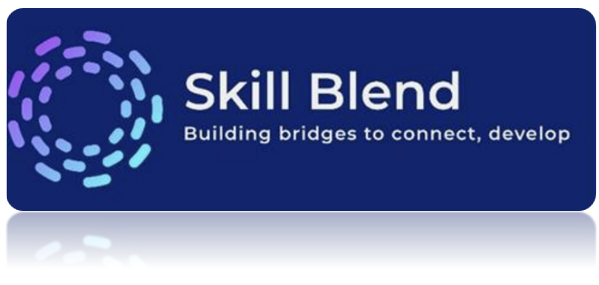

SkillBlend
Description: SkillBlend is a free consulting and skills exchange platform that connects individuals seeking to develop skills in their field with volunteering experts. It aims to remove barriers to education and promote knowledge sharing, supporting the Vision 2030 initiative for increased volunteer participation.
RideNGo

Description: RideNGo is designed to enhance the university experience by providing a seamless transport service for students navigating between campus buildings. With the challenges of long walks under the sun, RideNGo offers a reliable and easy way to reserve transportation, ensuring students arrive at their lectures on time and refreshed.
UJ PathFinder

Description: UJ PathFinder is an innovative platform designed to enhance the academic experience at the University of Jeddah by facilitating connections between students and potential employers. This tool streamlines the process of obtaining academic recommendations, allowing students to showcase their skills and achievements to companies more effectively. With features such as personalized profiles, direct messaging, and a user-friendly interface, UJ PathFinder promotes networking and mentorship opportunities. Students can easily access information about internships, job openings, and industry events, empowering them to make informed career choices. By bridging the gap between education and employment, UJ PathFinder supports students in their journey toward successful careers and helps companies find the right talent to meet their needs.